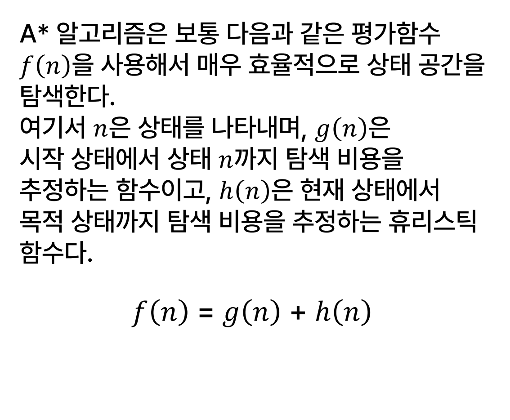
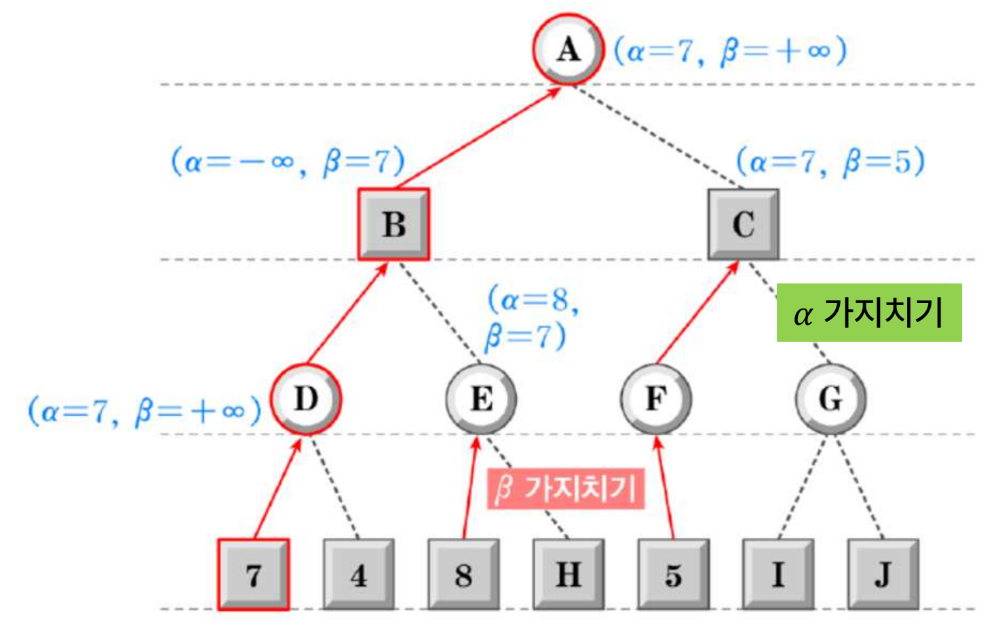
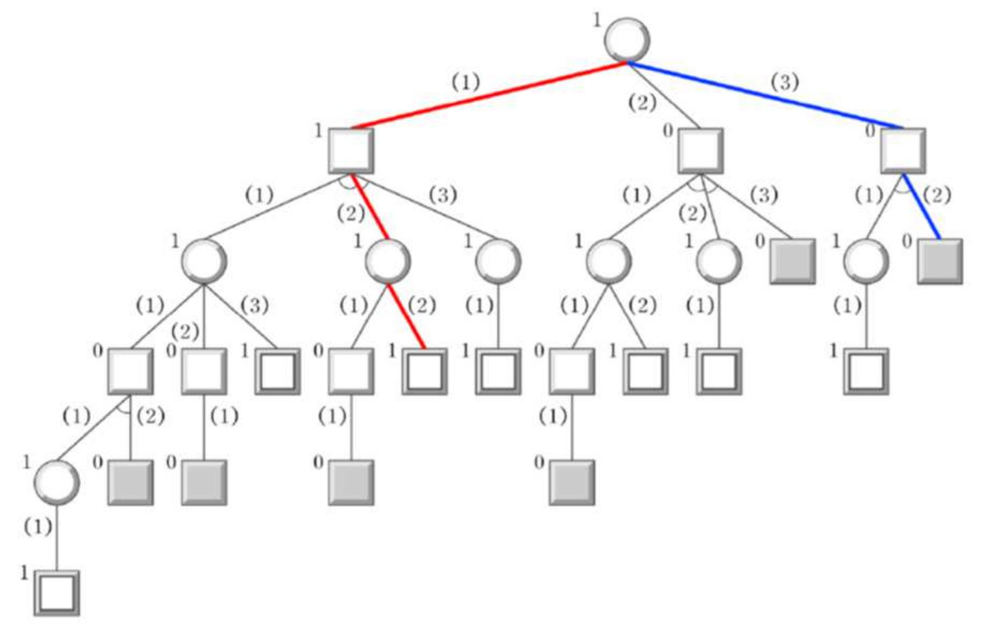
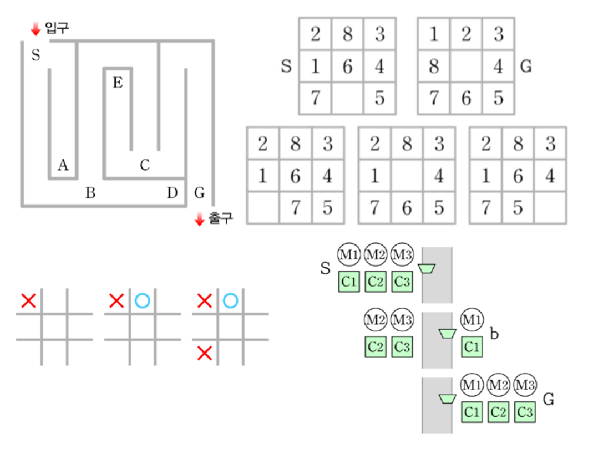
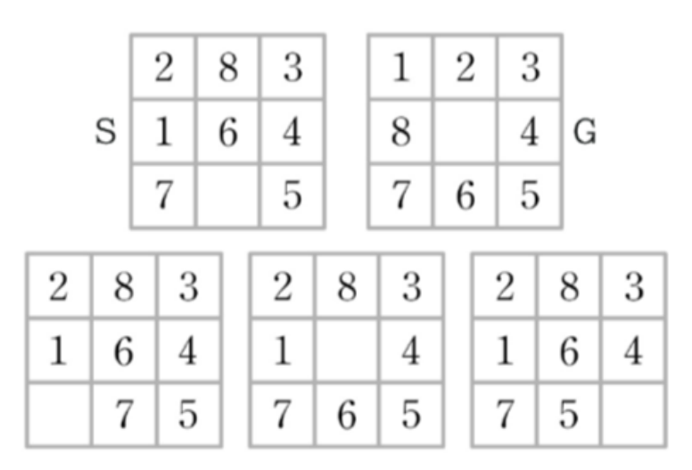

주어진 문제를 상태공간(State Space)으로 표현하고 탐색을 통해 해결한다는 의미를 이해한다.
상태공간 탐색 과정이 자연스럽게 탐색 트리(Search Tree)로 표현됨을 이해한다.
맹목적 탐색(Blind Search)의 두 종류 BFS(너비우선)·DFS(깊이우선)를 구분한다.
탐색 전략의 필요성을 이해하고 휴리스틱(Heuristic) 함수와 A* 알고리즘을 안다.

A* 알고리즘 — 평가함수 f(n) = g(n) + h(n)
게임 트리에서 Min-Max 전략과 αβ 가지치기(Pruning)의 원리를 이해한다.

알파-베타 가지치기(α-β Pruning) — 불필요한 가지 잘라내기

Min-Max 전략 — 게임 트리에서 자신은 max, 상대는 min을 선택
알파고 역시 본질은 탐색 시스템이라는 점을 이해한다.
1차시상태가 별로네, 문제야 문제 — 상태공간 탐색
문제를 ① 초기상태(S) ② 목적상태(G) ③ 연산자(Operator) 세 요소로 표현하고, 상태들 사이를 탐색해 해를 찾는 방법.
인공지능 연구 분야 — 탐색의 위치
인공지능은 1950년대 막 시작될 때부터 다양한 분야로 연구되었습니다. 시대별로 보면:
시대
주요 연구 분야
초기 (50~60년대)
탐색(Search), 문제풀이(Problem Solving), 정리증명(Theorem Proving), 추론, 계획, AI 언어(LISP·Prolog)
80년대
전문가 시스템(4주차), 지식표현
90년대~
불확실성(확률·Fuzzy), 머신러닝
2010년대~
인공신경망·딥러닝
다음 세대
유전 알고리즘·자연 컴퓨팅·인공생명
초기 인공지능을 주도한 사람들은 수학자이며 기호주의(Symbolism)에 입각했기 때문에 수학 증명·문제풀이 같은 분야로 시작했습니다. 강태원 교수가 학생일 때만 해도 인공지능을 배우려면 LISP·Prolog 같은 별도의 언어를 배워야 했지만, 오늘날은 C언어·Python으로 모두 해결할 수 있게 되었습니다.
"탐색은 너무 기본적이라 안 보일 뿐, 알파고 자체가 몬테카를로 탐색 시스템(MCTS)이다. 그만큼 중요한 위치에 있다."
— 강태원 교수
탐색이란 — "찾기"
탐색(Search)은 "찾는다"는 뜻입니다. 우리가 문제를 해결한다는 것은 결국 답을 찾는 행위이므로, 탐색이야말로 문제 해결과 직결되는 가장 중요한 개념입니다.
상태공간(State Space) — 모든 문제의 형식적 표현
상태공간 탐색의 핵심 개념은 "모든 문제를 상태공간으로 표현한다"는 것입니다. 그러기 위해 모든 문제는 다음 세 요소로 형식화됩니다.
정의 — 상태공간 탐색의 3요소
① 초기상태(Initial State, S) — 문제를 시작하는 상태
② 목적상태(Goal State, G) — 도달하고자 하는 상태(=답)
③ 연산자(Operator) — 한 상태에서 다른 상태로 옮기는 행동
"문제를 푼다"는 것은 결국 초기상태 S에서 목적상태 G에 도달하는 일련의 연산자를 찾는 일이며, 매 순간 "할 일"을 결정하는 과정입니다.
예제 1 — 미로 찾기 (Maze)
초기상태 S: 미로 입구
목적상태 G: 미로 출구
연산자: 특정 위치로 이동(상·하·좌·우)
미로 찾기는 이렇게 어떤 출발 위치에서 시작해 목적지에 도달하는 문제이며, 문제 해결은 곧 "길을 찾는 것"입니다.


8-퍼즐(8-puzzle) — 3×3 격자에 빈칸 1개와 숫자 8개상태공간 탐색의 4가지 대표 문제 — 미로·8퍼즐·틱택토·선교사와 식인종
3차시
바둑이나 장기처럼 교대로 자기 수를 두는 게임에서 생성되는 탐색 트리를 특히 ( 게임 ) 트리라 부른다. 이 트리는 보통 and-or 형태를 취한다. 자기 차례에서는 자기가 이길 수 있는 상태를 선택할 수 있으므로 or 형태의 가지로 표시하고, 상대 차례에서는 (항상 실수 없이) 상대가 자신이 이길 수 있는 상태를 선택할 것이 분명함으로 and 형태의 가지로 나타낸다.